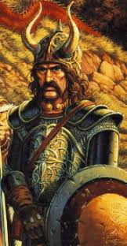

Spoiler warning
Just as a warning spoilers may be ahead so for those who are interested in getting into the series you have been warned.
Companion Characters in first three books
Tanis Half-Elven

Real/elven name is Thanthalas Quisif-Nan Pah. His Mother was elven father was human and was a product of speculated rape (depends on the book). He was raised by the Speaker of the Sun from Qualinesti along with the Speakers children. Fell in love with the Speakers daughter and was driven away by their romance being frowned upon. Unofficial leader of companions. Torn between his elven and human heritages. He wears a beard to hide his elven heritage.
Sturm Brightblade
Sturm is not an actual knight of Solamnia. His mother and him were sent into from Solamnia under mysterious circumstances when he was a child. Even though not knighted he lives his life by the Solamnic codes. Grew up with Caramon and Raistlin as childhood friends. When the companions first split he went to Solamnia to find out of his father and returned with his father's armor.
Caramon Majere
Caramon is the twin brother to Raistlin. Known for his big muscles, big appetites, and good looks. On the trip for Raistlin's test to become a full fledge mage Caramon was deeply disturbed at the results of the test. He is very loyal and devoted to his brother although afraid of him. He is the sword to his brothers' magic, and the two work as a fighting pair in combat.
Raistlin Majere
Raistlin is a very young, ambitious, and powerful wizard. After his testing in the Tower his body was "broken" to teach him a lesson. Par-Salian the Head of the White Order of mages was apologetic and sympathetic with Raistlins condition after testing and gave him and herbal recipe to assist with Raistlin's frail health and the artifact the Staff of Magius. Although part of the group he is mistrusted, and his feelings of the others are of a superior looking down on those lesser of him.
Tasselhoff Burrfoot
Tasselhoff or better known as Tas is from a race known as Kender. Kender are known to be mischievous and are known to acquire others' possessions but grow offended if confronted with stealing. One of the Kenders favorite sayings is each new trail needs a Hoopak, which is their go-to choice of walking stick/weapon. Kenders (especially Tas) are very proud of their topknot that they wear their hair in. Tas is well known for his collection of maps.
Flint Fireforge
Flint is a hill dwarf and is also the oldest member in the group. He was once a renowned smith but has since retired and is known to occasionally carve things out of wood. His closest bond is with Tanis as he helped guide Tanis in his younger years before he(Tanis) was sent from the elves. Deathly afraid of boats and form a water that he can't stand in also known to be "allergic" to horses.
Riverwind
Riverwind's father was out casted due to not following tribal religious beliefs. During a tribal function Riverwind refused to acknowledge that the chieftains daughter (Goldmoon) was a divine being. In doing so he caught Goldmoon's ire but also her heart. Asking for her hand in marriage he was sent on a quest to show proof of his belief in the gods of old. Returning from a city with black wings Riverwind with a mysterious blue crystal staff he is accused of blasphemy and sentenced to death. Goldmoon goes to his aide and both are transported away by the staff.
Goldmoon
Chieftains daughter and is considered a divine being by her tribal doctrine. Falls in love with Riverwind at tribal function. Takes leadership position in tribe as father sickens while Riverwind is away. Upon his return, her father is cured by staff but then Riverwind is accused of blasphemy and witchcraft and sentenced to death. At his stoning she jumps to protect him and both Riverwind and Goldmoon are whisked away by the staff. Becomes the bearer of the blue crystal staff. The love she shares with Riverwind is forbidden due to them being unmarried.
Tika Waylan
Barmaid at Otiks tavern Inn of the Last Home and adopted daughter of Otik. Her father was a magician named Alleran Waylan who ran out on Tika's mother or mother died in childbirth and was raised by father till his death (depending on the book which version). Joins the companions later and learns the subtle art of shield-bashing as a means of defending herself. Tika has a long-standing crush on Caramon Majere.
Laurana
Real name/elven name is Lauralanthalasa Kanan. Laurana is the youngest and only daughter of the Speaker of the Sun. Started a romantic relationship with Tanis as children and carried it after his departure. After Tanis returns to her homeland she seeks to rekindle the romance and is rebuked. Forbidden to join the companions by both her father and Tanis she sneaks away to join them later. Thought to be a liability by Tanis she soon proves herself by showing she does have some training in the martial arts.
Gilthanas
Middle and older brother to Laurana. Gilthanas was an aide on Tanis's decision to leave when he was younger. Holds a hatred towards Tanis due to Laurana loving him and his half race lineage. Has minor skill in wizardry but not to the level of Raistlin. Assists the companions to sneak into the Fortress of Pax Tharkas.